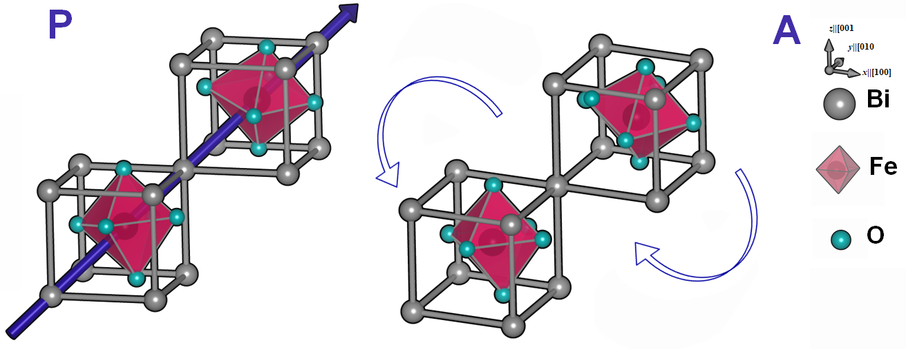
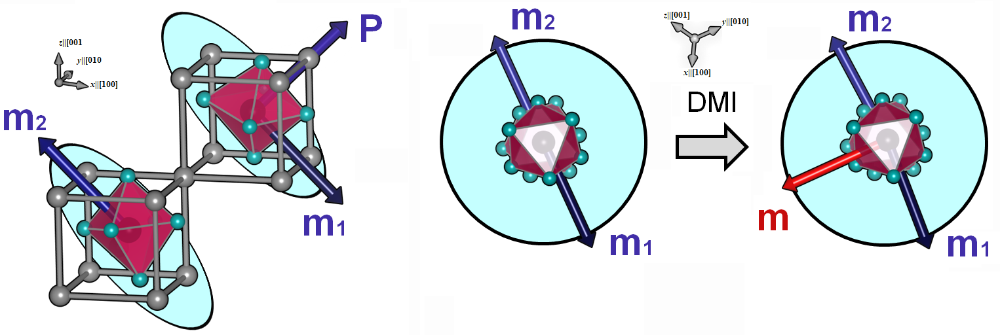

H2020-MSCA-IF-2019
In the framework of the Marie-Curie individual fellowship - H2020-MSCA-IF-2019 - call, this additional page was added to the FERRET website in order to disseminate results of Project SCALES - 897614 to the general public and the technical audience. We will discuss background and the modeling effort, summarize our key findings, and provide examples of how to reproduce representative results obtained during the funding period which are described in detail within our article Mangeri et al. (2023).
Background
The project (submitted in September, 2019) proposed developing a continuum approach for simulations of multiferroic compounds. Multiferroics are a class of materials which display both an electric and magnetic ordering below their critical phase transition temperature. Specifically, we use the perovskite (BFO) as our material workhorse. BFO displays both ferroelectricity and antiferromagnetism at room temperature, leading to a host of possible applications from beyond-CMOS logic gates, tunneling magnetoresistant spintronic valves, THz radiation emitters, enhanced piezoelectric elements, ultrafast acoustic modulators, to linear electrooptical components. We refer the reader to Fiebig et al. (2016) and Spaldin and Ramesh (2019) and for excellent reviews on the topics of multiferroics, including BFO, along with its technological applications. As miniaturization is a significant concern for next generation electronic device design, the thicknesses of multiferroic films synthesized for these applications are in the range of a few 10’s of nm to a few µm's. This length-scale criterion places limits of the types of theoretical methodologies that can be used to study and predict properties. This was the motivation, in the context of SCALES, to develop a continuum approach.
To study these materials at the device-relevant scale, we proposed to couple the phase field method for ferroelectrics with the micromagnetic approach. Both of these methodologies utilize a "coarse-grained" description of order parameters. Both approaches are phenomenological in origin and have been shown to describe well the theoretical picture of ferroelectric and ferromagnetic materials respectively. Typically, this is challenging because the energy of the magnetic order tends to be many orders of magnitude lower than the structural distortions. Incidentally, this leads to different time and length scales which accompany the structural or magnetic phase transitions. The idea was to have, self-consistently on the same time and length scale, a model for both electric and magnetic order unlocking the magnetoelectric properties in both static or dynamic configurations. This allowed us to investigate some applications of the model corresponding to magnetoelectric switching and also spin-wave transport across the multiferroic domain boundaries.
We leveraged the Multiphysics Object Oriented Simulation Environment (MOOSE) framework which is open-source software convenient for rapid model development with advanced features. MOOSE is developed and maintained at Idaho National Laboratory in the United States. We implement our models of BFO within FERRET (this website), an open-source add-on module (part of the MOOSE ecosystem of applications). See the landing page for more information on FERRET.
Properties and coupled polar-magnetic model
We consider a zero temperature limit free energy density functional defined as a sum of Landau-type energy density from the structural distortions of the lattice (), the magnetic energy density due to the nominally collinear spin subsystem (), and a magnetostructural coupling between the electric and magnetic order parameters () in single crystal BFO.
(1)
In the continuum description, some formal definitions of the order parameters are needed. The electric polarization is connected to the displacement of the and cations relative to the oxygen anions along the pseudocubic or equivalent directions. The vector describes the rotations of the cages about the polar axis where the antiphase behavior in first-neighboring unit cells is implicitly assumed. See Fig. 1 which shows both of these structural distortions.

Figure 1: Structural distortion order parameters and corresponding to the electric dipole moment and antiphase oxygen octahedral cage rotations about the polar axis respectively.
A homogeneous strain arises below the structural phase transition temperature which is a rank two tensor with symmetric components ,
(2)
The variable is the component of the elastic displacement vector which accompanies the ferroelectric phase transition in this material (sometimes called spontaneous or ferroelastic strain). For the spin subsystem, BFO is an antiferromagnet with anti-aligned spins at first-neighboring Fe sites (G-type) leading to two distinct sublattices and . The quantity is the AFM N\'{e}el vector which we define as . The magnetic orientation is of the easy-plane variety, whose plane normal is the polar director. We propose that the presence of the antisymmetric Dzhaloshinksii-Moriya interaction (DMI) introduces a free energy density term of the form,
(3)
coupled to the direction of the antiphase tilts which acts to cant the sublattices slightly in the plane. We refer the reader to Ederer and Spaldin (2005) and related work for more information on this phenomena in BFO. Therefore, due to the DMI, a weak nonvanishing magnetic moment is present in the system and can be computed as .

Figure 2: Atomistic depiction of the magnetic sublattices for demonstrating canting due to DMI in the easy-plane (cyan circles).
A schematic of the spin order is shown in Fig. 2 (left) easy-plane anisotropy of relative to direction and (right) DMI-induced canting in the easy-plane (shown as cyan circles). The quantities and are defined such that with, in general, reflecting the presence of a strong AFM coupling between the sublattices but with a weak noncollinearity in and . The total weak magnetization is where is the saturation magnetization density of the Fe sublattice ( B/Fe) Dixit et al. (2015).
Our full approach involves solving the couple dynamic equation system,
(4)
for the structural order () along with,
at every time step, where and are the electro- and rotostrictive coefficients that couple and to the elastic strain respectively. For the spins, we solve,
(5)
Here, are a relaxation coefficients related to the time scales involved in the structural phase transition. The parameter is the electron gyromagnetic ratio and is the effective field acting on sublattice . The coeffiicent is a phenomenological damping constant which if made nonzero (and positive) drives the magnetic system to the ground state.
A detailed description of our model is given in Mangeri et al. (2023) and in the following sections we step through our key results and provide representative example files and documentation to reproduce the calculations.
-------------------------------------------------------------------------------------------------------------------------------------------------------------------------------------------------------
This project SCALES - 897614 was funded for 2021-2023 at the Luxembourg Institute of Science and Technology under principle investigator Jorge Íñiguez-González. The research was carried out within the framework of the Marie Skłodowska-Curie Action (H2020-MSCA-IF-2019) fellowship.

-------------------------------------------------------------------------------------------------------------------------------------------------------------------------------------------------------
References
- Hemant Dixit, Jun Hee Lee, Jaron T. Krogel, Satoshi Okamoto, and Valentino R. Cooper.
Stabilization of weak ferromagnetism by strong magnetic response to epitaxial strain in multiferroic BiFeO₃.
Sci. Rep., 5:12969, 2015.[Export]
- Claude Ederer and Nicola A. Spaldin.
Weak ferromagnetism and magnetoelectric coupling in bismuth ferrite.
Physical Review B, 2005.[Export]
- M. Fiebig, T. Lottermoser, D. Meier, and M. Trassin.
The evolution of multiferroics.
Nature Reviews Materials, 2016.[Export]
- J. Mangeri, D. Rodrigues, S. Biswas, M. Graf, O. Heinonen, and J. Iniguez.
A coupled magneto-structural continuum model for multiferroic BiFeO₃.
Physical Review B, 108(9):094101, 2023.[Export]
- Nicola A. Spaldin and R. Ramesh.
Advances in magnetoelectric multiferroics.
Nature Materials, 18:203–212, 2019.[Export]